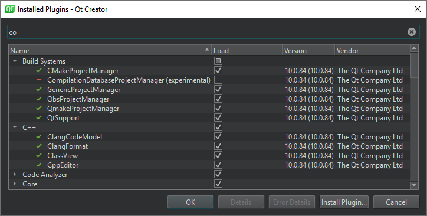

Enable and disable plugins
Qt Creator uses standard names and locations on Linux, macOS, and Windows for standard features, such as about dialogs.
| Linux and Windows | macOS |
|---|---|
| Help > About Plugins | Qt Creator > About Plugins |
New Qt Creator plugins are often introduced as experimental plugins to let you try them out before they are fully supported. Experimental plugins are disabled by default and you must enable them for them to become visible after you restart Qt Creator. By default, all the plugins that the plugin depends on are also enabled.
You can also disable plugins that you do not use, to streamline Qt Creator. If you disable a plugin, Qt Creator asks you to disable all plugins that depend on it. This might lead to some features not working properly. Further, the plugins are not automatically enabled if you enable the first plugin again.
To enable and disable plugins:
- Go to About Plugins.
- Start typing in the Filter field to find a plugin.

- Select the Load check box to enable a plugin, or deselect it to disable a plugin.
- Select OK.
- Select Restart Now to restart Qt Creator and have the changes take effect.
See also Install plugins.